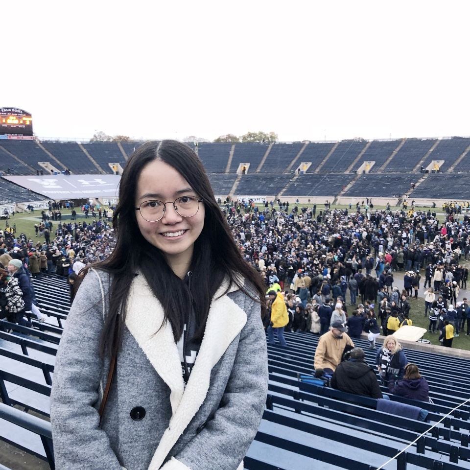

I am currently a third-year PhD student in Biostatistics at the University of Washington, with broad interest in statistical learning methods and computational techniques for data with complex structure (e.g. observations over a network or spatial domain). I am working with Dr. Ali Shojaie on theoretical properties of approximate inference techniques for spatial point processes.
I obtained my MS degree in Biostatistics at Yale University, where I worked with Dr. Forrest Crawford on estimating hard-to-reach populations in social networks, and in particular, the large-sample behavior of relevant estimators. Before that, I received my BS in Mathematics at Tongji University in Shanghai, China.